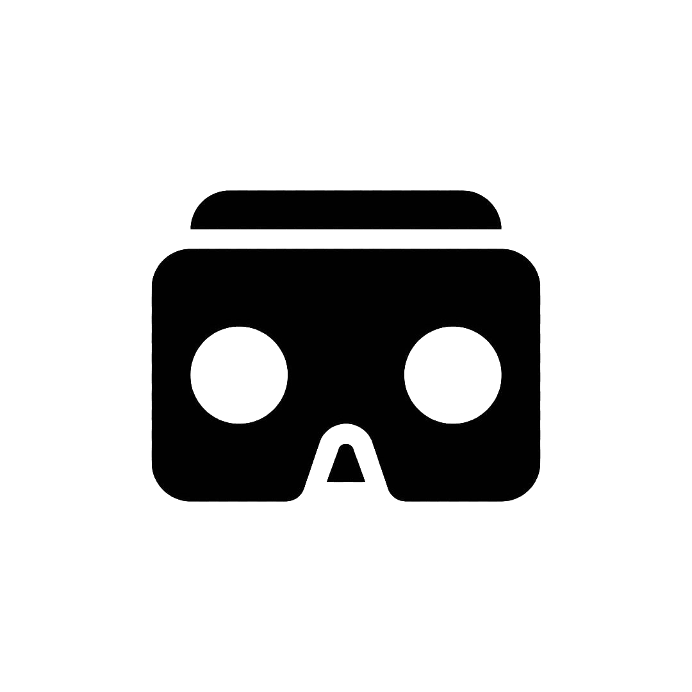
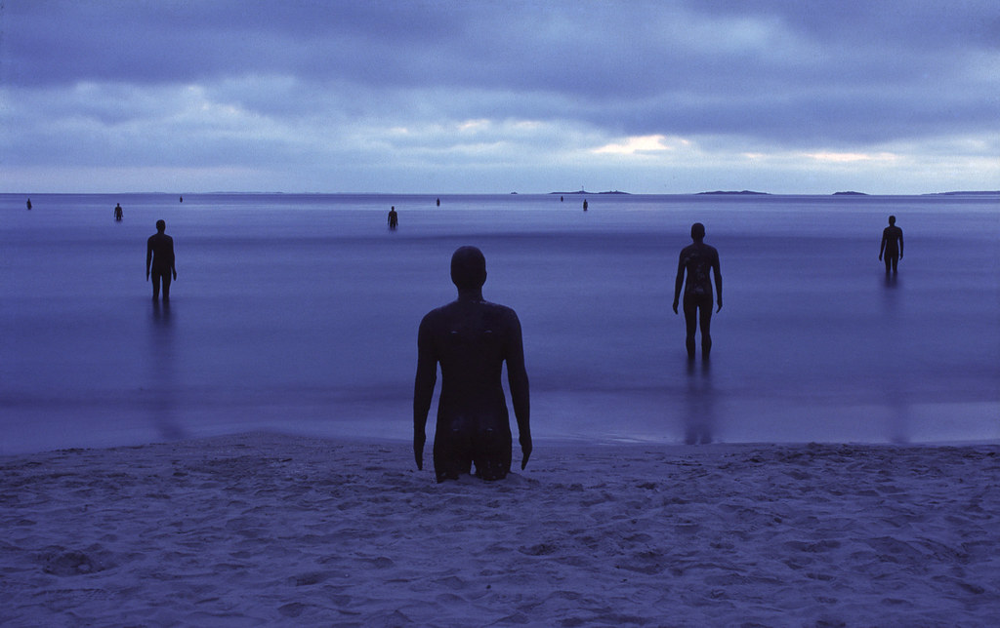
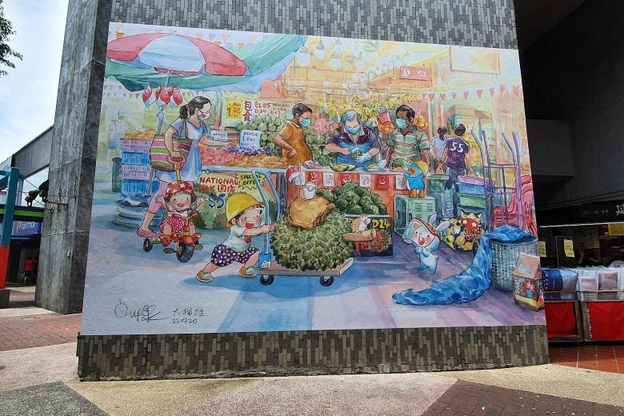
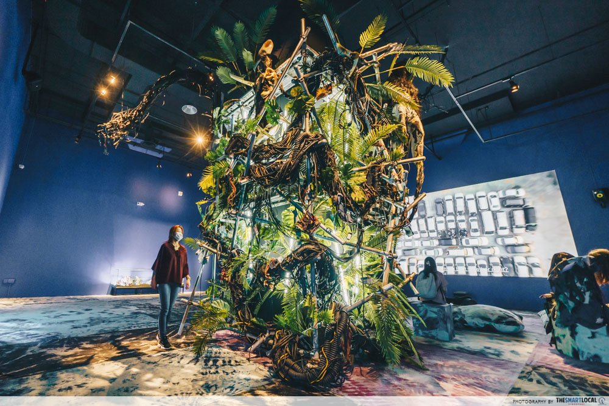

mixing realities:
an affordance-oriented framework for designing virtual spaces
Sean Chua / 1006466
Why do some virtual experiences feel good and not others?
(and how do we make them good?)
Theory of affordances
When you have many options for moving through a space (and the space itself communicates to you the means of movement) you will feel more immersed in the space.
Spatial cognition is experienced by the body; an affordance represents a potential avenue of movement through space.
Carrillo Quiroga, P. and Chacón Hernández, J.C., 2021. The Perception of Space in Virtual Reality, Correlation Between Affordances and Spatial Presence. Entreciencias: diálogos en la sociedad del conocimiento, 9(23).
Theory of affordances
Taking this framework, we may explain why shoddily-made VR landscapes don't have mass appeal—they’re just not providing enough affordances.
Possible link to Zoom fatigue—the IRL affordance of self-expression gets ‘compressed’ into a flat video feed?
Nadler, R., 2020. Understanding “Zoom fatigue”: Theorizing spatial dynamics as third skins in computer-mediated communication. Computers and Composition, 58, p.102613.
But isn’t this just a problem with fidelity?
just add more pixels + procedurally-generated textures + more processing power + better physics?
tl;dr: probably not.
(why?)
↓
1:
Low-fidelity virtual worlds can be immersive and even lived-in—see Minecraft and Roblox.
2:
Despite the realism of VR games like Half-Life: Alyx, why do we see VR headsets at specialised arcades and not at Challenger or Popular?
An affordance-oriented model of mixed-reality* applications
* virtual reality, augmented reality, and everything in between
from this...
When the sensations are realistic, the world is realistic.
... to this.
When the inputs are constrained, our sensations are constrained, and our space of perceived actions are constrained.
↓
in other words:
Different interfaces take in different inputs (data) and produce different outputs (sensations).
From these outputs, we sense affordances: where to move and what to do.
↓
in other words:
To be as rich as IRL, affordances must create a sense of embodied dwelling + serendipity.
We can abstract these factors as functions of dwell time and input space.
and so:
There must be a large & variable input space from the world to the interface.
The ‘world’—virtual or otherwise—must provide a large range of data to the mixed-reality application.
The mixed-reality application must produce varied and continuous outputs from that data.
↓
and so:
This gives us a sense of varied and continuous affordances.
and so:
There must be a large & variable input timescale during which the user is connected to the interface.
Think of how prolonged usage of your phone accustoms you to its icon layout, its quirks, its glitches.
Or how a prolonged stay in a room gathers personal touches & artefacts.
↓
and so:
This gives us as much time as we need to dwell in a mixed-reality application.
types of mixed-reality applications in an affordance-oriented framework
type: Completely virtual affordances
(e.g. virtual realms like Decentraland, virtual-reality games like Half-Life: Alyx and Superhot)
Inputs: Internally-contained 3D environment
Outputs: Game mechanics, 3D forms, images
Affordances: Constrained to playing game (within provided rules), manipulating shapes from the 3D environ or asset pool
type: Completely virtual affordances
(e.g. virtual realms like Decentraland, virtual-reality games like Half-Life: Alyx and Superhot)
Fundamentally, every aspect of the virtual space is a manual implementation.
While there can be expansive asset libraries and procedurally-generated effects, searching for and implementing them is also a manual effort—leading to reuse out of convenience.
type: Virtual-constrained affordances
(e.g. educational aids like Microsoft Hololens, data-visualisation tools like Flow Immersive)
Inputs: Dataset/3D model overlaid on real-world environment
Outputs: 1-to-1 representation of dataset/3D model
Affordances: Constrained to manipulation of dataset or model, extrapolating model to real life
type: Virtual-constrained affordances
(e.g. educational aids like Microsoft Hololens, data-visualisation tools like Flow Immersive)
The outputs of these interfaces are still one-to-one representations of digital assets, but the nature of these tools tend to permit more flexibility in how they’re overlaid on real life.
These interfaces see promise in being embedded/embodied parts of real-life workflows: e.g. engineers having access to real-time data or digital twins while working on real-life projects.
type: Real-world-constrained affordances (1-to-1)
(e.g. fitness apps like Supernatural or Ghost Pacer, navigation apps like Google Maps AR)
Inputs: Continuous data from your body and/or real-world geography
Outputs: 1-to-1 representation of bodily/spatial statistics
Affordances: Running, training, navigating—constrained to the actions of the body
type: Real-world-constrained affordances (1-to-1)
(e.g. fitness apps like Supernatural or Ghost Pacer, navigation apps like Google Maps AR)
The outputs of these interfaces are one-to-one representations of some underlying object—but the underlying object is something complex and lived-in, like a map of real-life locations, or something deeply intimate, like one’s body.
Interacting with these affordances is not as straightforward, leading to deeply personalised experiences.
type: Real-world-constrained affordances (many-to-1)
(e.g. measurement and translation apps like Google Lens, decorative apps like Snapchat filters)
Inputs: Sounds and sights from the real world
Outputs: Data (verbal or pictorial) of objects in the environment, decorations (visual and aural) responding to the self/environment
Affordances: Constrained by what you do with this data (measuring, translating, imagining, decorating)
type: Real-world-constrained affordances (many-to-1)
(e.g. measurement and translation apps like Google Lens, decorative apps like Snapchat filters)
For these interfaces, any object can be considered valid input. The outputs, however, tend to be straightforward functions applied to these inputs.
The real flexibility in affordance is provided by how modular and flexible the tools are, and the large array of things you can do with the outputs, or chain them with other tasks.
Unpredictability in these functions can be sources of serendipity or personal quirks.
type: Real-world-constrained affordances (many-to-many)
(e.g. considering the internet as a virtual space)
Inputs: Anything IRL that gets recorded
Outputs: Anything that people repost/respond to online
Affordances: Consuming, producing, reacting, remixing to content... limited to a screen.
type: Real-world-constrained affordances (many-to-many)
(e.g. the internet as a virtual space)
This kind of interface has not been created yet. It might not even be useful as a predictable tool.
However, this gives us a direction to think about how virtual spaces can be created that feel like worlds on their own—a ‘type specimen’ of affordance-space-making that we might not need to emulate, but can always strive towards.
in other words:
Most mixed-reality interfaces are self-contained in their inputs, which limits the sensory outputs to the user, which limits their affordance-spaces.
in other words:
On the other hand, some interfaces tie their inputs to the broad array of sensorial data available in the real world. This ties the affordance-space to the breadth of the real world.
in other words:
The natural (if idealistic) progression of this is some kind of ‘many-to-many’ interface capable of generating complexity and variability within itself.
(but this is not necessarily useful for all things.)Which types of mixed reality produce the widest input spaces?
Answer: fitness apps, navigation apps, measuring apps, translation apps, responsive decorative apps
(i.e. things that map the real world to a continuous output-space)
Which types of mixed reality produce the longest variable dwell time?
Answer: Unsure—depends on nonintrusive hardware, 5G connection, and good battery life.
! → ?
translating this to design requirements
designing a digital gallery
What do people appreciate about good gallery spaces?
1: “The gallery is a serene place for special occasions.”
↓
1: “The gallery is a serene place for special occasions.”
How does this translate to affordances?
The ability to speak/communicate to others is not necessarily important. The mixed reality experience should be located in a special place (i.e. not viewable from the home?).
What do people appreciate about good gallery spaces?
2: “The gallery is a place to watch people watching art.”
↓
2: “The gallery is a place to watch people watching art.”
How does this translate to affordances?
The ability to see other visitors is important, but interaction may not necessarily be the point.
What do people appreciate about good gallery spaces?
3: “The gallery is a space that evolves over time.”
↓
3: “The gallery is a space that evolves over time.”
How does this translate to affordances?
Stimuli provided in the mixed reality space can be tied to the physical passage of time. Visitors may be able to make changes to the space, or leave marks in other ways.
What do people appreciate about good gallery spaces?
4: “The gallery gives room for each artwork to stand on its own.”
↓
4: “The gallery gives room for each artwork to stand on its own.”
How does this translate to affordances?
The space should afford meaningful curation by museum professionals. The dimensions of the space should be somewhat expansive.
Translating this to design decisions
↓
1: One-to-many interface
The experience of viewing a single set of artworks can be shaped by place-based, time-based, or chance-based parameters.
Another Place, Anthony Gormley, 2005
2: Binding interface output to real-life variation
Other visitors’ presence can be signified in abstract ways.

Journey, Thatgamecompany and Santa Monica Studio, 2012
2: Binding interface output to real-life variation
The mixed-reality experience might be accessible only from particular locations in Singapore (void decks, parks, rooftops).
Mural at Ang Mo Kio Town Hub, Singapore
3: Expanding the time-space of dwelling
The mixed-reality experience can persist as a platform for exhibiting future works.
A Machine Boosting Energy Into the Universe, Korakrit Arunanondchai, 2021
3: Expanding the time-space of dwelling
Future works might hinge on continuous, accumulated visitor contributions in a way unhinged from real-world limitations.

r/place 2022, reddit
Conclusion
Mixed-reality is just getting started.
Critical spatial perspectives are key to designing for it.